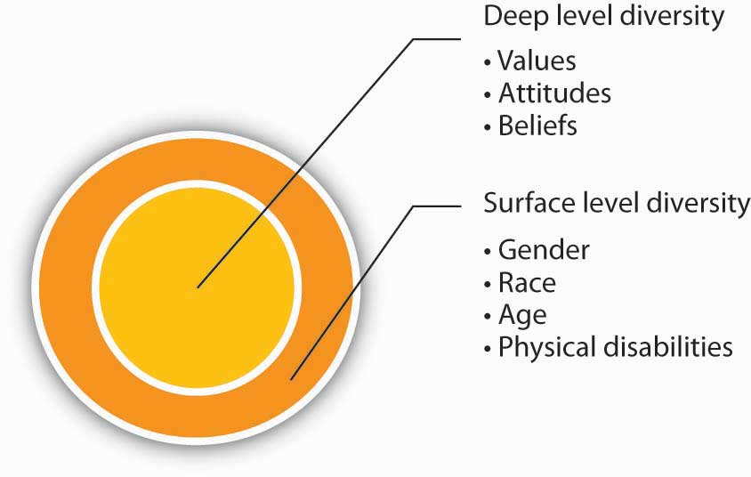
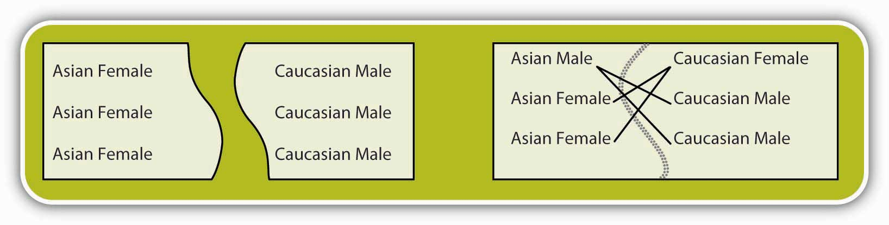
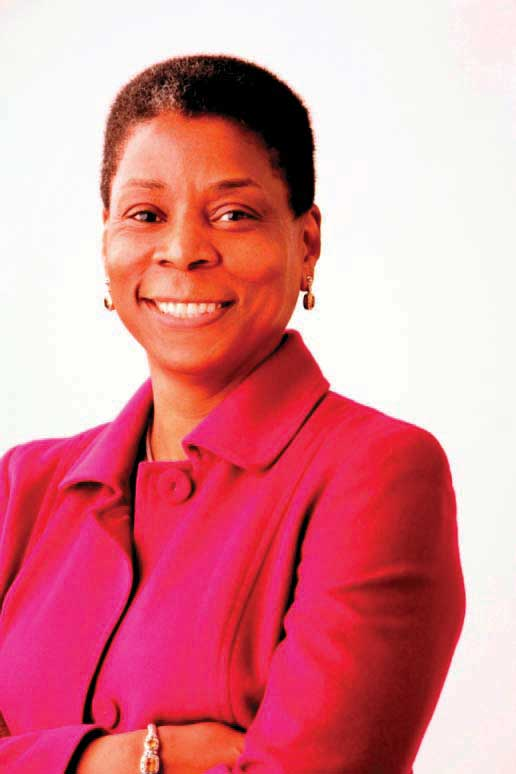

DiversityThe ways in which people are similar or different from each other. refers to the ways in which people are similar or different from each other. It may be defined by any characteristic that varies within a particular work unit such as gender, race, age, education, tenure, or functional background (such as being an engineer versus being an accountant). Even though diversity may occur with respect to any characteristic, our focus will be on diversity with respect to demographic, relatively stable, and visible characteristics: specifically gender, race, age, religion, physical abilities, and sexual orientation. Understanding how these characteristics shape organizational behavior is important. While many organizations publicly rave about the benefits of diversity, many find it challenging to manage diversity effectively. This is evidenced by the number of complaints filed with the Equal Employment Opportunity Commission (EEOC) regarding discrimination. In the United States, the Age Discrimination Act of 1975 and Title VII of the Civil Rights Act of 1964 outlaw discrimination based on age, gender, race, national origin, or religion. The 1990 Americans with Disabilities Act prohibits discrimination of otherwise capable employees based on physical or mental disabilities. In 2008, over 95,000 individuals filed a complaint claiming that they were discriminated based on these protected characteristics. Of course, this number represents only the most extreme instances in which victims must have received visibly discriminatory treatment to justify filing a complaint. It is reasonable to assume that many instances of discrimination go unreported because they are more subtle and employees may not even be aware of inconsistencies such as pay discrimination. Before the passing of antidiscrimination laws in the United States, many forms of discrimination were socially acceptable. This acceptance of certain discrimination practices is more likely to be seen in countries without similar employment laws. It seems that there is room for improvement when it comes to benefiting from diversity, understanding its pitfalls, and creating a work environment where people feel appreciated for their contributions regardless of who they are.
What is the business case for diversity? Having a diverse workforce and managing it effectively have the potential to bring about a number of benefits to organizations.
An important potential benefit of having a diverse workforce is the ability to make higher quality decisions. In a diverse work team, people will have different opinions and perspectives. In these teams, individuals are more likely to consider more alternatives and think outside the box when making decisions. When thinking about a problem, team members may identify novel solutions. Research shows that diverse teams tend to make higher quality decisions.McLeod, P., Lobel, S., & Cox, T. H. (1996). Ethnic diversity and creativity in small groups. Small Group Research, 27, 248–264. Therefore, having a diverse workforce may have a direct impact on a company’s bottom line by increasing creativity in decision making.
A company with a diverse workforce may create products or services that appeal to a broader customer base. For example, PepsiCo Inc. planned and executed a successful diversification effort in the recent past. The company was able to increase the percentage of women and ethnic minorities in many levels of the company, including management. The company points out that in 2004, about 1% of the company’s 8% revenue growth came from products that were inspired by the diversity efforts, such as guacamole-flavored Doritos chips and wasabi-flavored snacks. Similarly, Harley-Davidson Motor Company is pursuing diversification of employees at all levels because the company realizes that they need to reach beyond their traditional customer group to stay competitive.Hymowitz, C. (2005, November 14). The new diversity: In a global economy, it’s no longer about how many employees you have in this group and that group; It’s a lot more complicated—and if you do it right, a lot more effective. Wall Street Journal, p. R1. Wal-Mart Stores Inc. heavily advertises in Hispanic neighborhoods between Christmas and The Epiphany because the company understands that Hispanics tend to exchange gifts on that day as well.Slater, S. F., Weigand, R. A., & Zwirlein, T. J. (2008). The business case for commitment to diversity. Business Horizons, 51, 201–209. A company with a diverse workforce may understand the needs of particular groups of customers better, and customers may feel more at ease when they are dealing with a company that understands their needs.
When employees feel that they are fairly treated, they tend to be more satisfied. On the other hand, when employees perceive that they are being discriminated against, they tend to be less attached to the company, less satisfied with their jobs, and experience more stress at work.Sanchez, J. I., & Brock, P. (1996). Outcomes of perceived discrimination among Hispanic employees: Is diversity management a luxury or necessity? Academy of Management Journal, 39, 704–719. Organizations where employees are satisfied often have lower turnover.
Companies that do a better job of managing a diverse workforce are often rewarded in the stock market, indicating that investors use this information to judge how well a company is being managed. For example, companies that receive an award from the U.S. Department of Labor for their diversity management programs show increases in the stock price in the days following the announcement. Conversely, companies that announce settlements for discrimination lawsuits often show a decline in stock prices afterward.Wright, P., Ferris, S. P., Hiller, J. S., & Kroll, M. (1995). Competitiveness through management of diversity: Effects on stock price valuation. Academy of Management Journal, 30, 272–287.
Companies doing a particularly bad job in diversity management face costly litigations. When an employee or a group of employees feel that the company is violating EEOC laws, they may file a complaint. The EEOC acts as a mediator between the company and the person, and the company may choose to settle the case outside the court. If no settlement is reached, the EEOC may sue the company on behalf of the complainant or may provide the injured party with a right-to-sue letter. Regardless of the outcome, these lawsuits are expensive and include attorney fees as well as the cost of the settlement or judgment, which may reach millions of dollars. The resulting poor publicity also has a cost to the company. For example, in 1999, the Coca-Cola Company faced a race discrimination lawsuit claiming that the company discriminated against African Americans in promotions. The company settled for a record $192.5 million.Lovel, J. (2003, May 2). Race discrimination suit targets Coke bottler CCE. Atlanta Business Chronicle. Retrieved January 29, 2009, from http://atlanta.bizjournals.com/atlanta/stories/2003/05/05/story1.html. In 2004, the clothing retailer Abercrombie & Fitch faced a race discrimination lawsuit that led to a $40 million settlement and over $7 million in legal fees. The company had constructed a primarily Caucasian image and was accused of discriminating against Hispanic and African American job candidates, steering these applicants to jobs in the back of the store. As part of the settlement, the company agreed to diversify its workforce and catalog, change its image to promote diversity, and stop recruiting employees primarily from college fraternities and sororities.Greenhouse, S. (2004, November 17). Abercrombie & Fitch bias case is settled. New York Times. Retrieved January 29, 2009, from http://www.nytimes.com/2004/11/17/national/17settle.html. In 2007, the new African American district attorney of New Orleans, Eddie Jordan, was accused of firing 35 Caucasian employees and replacing them with African American employees. In the resulting reverse-discrimination lawsuit, the office was found liable for $3.7 million, leading Jordan to step down from his office in the hopes of preventing the assets of the office from being seized.After $3.7 million reverse discrimination lawsuit, the New Orleans district attorney resigns. (2007, October 31). DiversityInc Magazine. Retrieved November 18, 2008, from http://www.diversityinc.com/public/2668.cfm. As you can see, effective management of diversity can lead to big cost savings by decreasing the probability of facing costly and embarrassing lawsuits.
As a result of all these potential benefits, companies that manage diversity more effectively tend to outperform others. Research shows that in companies pursuing a growth strategy, there was a positive relationship between racial diversity of the company and firm performance.Richard, O. C. (2000). Racial diversity, business strategy, and firm performance: A resource-based view. Academy of Management Journal, 43, 164–177. Companies ranked in the Diversity 50 list created by DiversityInc magazine performed better than their counterparts.Slater, S. F., Weigand, R. A., & Zwirlein, T. J. (2008). The business case for commitment to diversity. Business Horizons, 51, 201–209. And, in a survey of 500 large companies, those with the largest percentage of female executives performed better than those with the smallest percentage of female executives.Weisul, K. (2004, January 28). The bottom line on women at the top. Business Week Online. Retrieved November 14, 2008, from http://www.businessweek.com/.
If managing diversity effectively has the potential to increase company performance, increase creativity, and create a more satisfied workforce, why aren’t all companies doing a better job of encouraging diversity? Despite all the potential advantages, there are also a number of challenges associated with increased levels of diversity in the workforce.
One of the commonly observed phenomena in human interactions is the tendency for individuals to be attracted to similar individuals.Riordan, C. M., & Shore, L. M. (1997). Demographic diversity and employee attitudes: An empirical examination of relational demography within work units. Journal of Applied Psychology, 82, 342–358. Research shows that individuals communicate less frequently with those who are perceived as different from themselves.Chatman, J. A., Polzer, J. T., Barsade, S. G., & Neale, M. A. (1998). Being different yet feeling similar: The influence of demographic composition and organizational culture on work processes and outcomes. Administrative Science Quarterly, 43, 749–780. They are also more likely to experience emotional conflict with people who differ with respect to race, age, and gender.Jehn, K. A., Northcraft, G. B., & Neale, M. A. (1999). Why differences make a difference: A field study of diversity, conflict, and performance in workgroups. Administrative Science Quarterly, 44, 741–763; Pelled, L. H., Eisenhardt, K. M., & Xin, K. R. (1999). Exploring the black box: An analysis of work group diversity, conflict, and performance. Administrative Science Quarterly, 44, 1–28. Individuals who are different from their team members are more likely to report perceptions of unfairness and feel that their contributions are ignored.Price, K. H., Harrison, D. A., & Gavin, J. H. (2006). Withholding inputs in team contexts: Member composition, interaction processes, evaluation structure, and social loafing. Journal of Applied Psychology, 91, 1375–1384.
The similarity-attraction phenomenonThe tendency to be more attracted to individuals who are similar to us. may explain some of the potentially unfair treatment based on demographic traits. If a hiring manager chooses someone who is racially similar over a more qualified candidate from a different race, the decision will be ineffective and unfair. In other words, similarity-attraction may prevent some highly qualified women, minorities, or persons with disabilities from being hired. Of course, the same tendency may prevent highly qualified Caucasian and male candidates from being hired as well, but given that Caucasian males are more likely to hold powerful management positions in today’s U.S.-based organizations, similarity-attraction may affect women and minorities to a greater extent. Even when candidates from minority or underrepresented groups are hired, they may receive different treatment within the organization. For example, research shows that one way in which employees may get ahead within organizations is through being mentored by a knowledgeable and powerful mentor. Yet, when the company does not have a formal mentoring program in which people are assigned a specific mentor, people are more likely to develop a mentoring relationship with someone who is similar to them in demographic traits.Dreher, G. F., & Cox, T. H. (1996). Race, gender and opportunity: A study of compensation attainment and the establishment of mentoring relationships. Journal of Applied Psychology, 81, 297–308. This means that those who are not selected as protégés will not be able to benefit from the support and advice that would further their careers. Similarity-attraction may even affect the treatment people receive daily. If the company CEO constantly invites a male employee to play golf with him while a female employee never receives the invitation, the male employee may have a serious advantage when important decisions are made.
Why are we more attracted to those who share our demographic attributes? Demographic traits are part of what makes up surface-level diversityTraits that are highly visible to us and those around us, such as race, gender, and age.. Surface-level diversity includes traits that are highly visible to us and those around us, such as race, gender, and age. Researchers believe that people pay attention to surface diversity because they are assumed to be related to deep-level diversityDiversity in values, beliefs, and attitudes., which includes values, beliefs, and attitudes. We want to interact with those who share our values and attitudes, but when we meet people for the first time, we have no way of knowing whether they share similar values. As a result, we tend to use surface-level diversity to make judgments about deep-level diversity. Research shows that surface-level traits affect our interactions with other people early in our acquaintance with them, but as we get to know people, the influence of surface-level traits is replaced by deep-level traits such as similarity in values and attitudes.Harrison, D. A., Price, K. H., Gavin, J. H., & Florey, A. T. (2002). Time, teams, and task performance: Changing effects of surface- and deep-level diversity on group functioning. Academy of Management Journal, 45, 1029–1045. Age, race, and gender dissimilarity are also stronger predictors of employee turnover during the first few weeks or months within a company. It seems that people who are different from others may feel isolated during their early tenure when they are dissimilar to the rest of the team, but these effects tend to disappear as people stay longer and get to know other employees.
Figure 2.3
Individuals often initially judge others based on surface-level diversity. Over time, this effect tends to fade and is replaced by deep-level traits such as similarity in values and attitudes.
As you may see, while similarity-attraction may put some employees at a disadvantage, it is a tendency that can be managed by organizations. By paying attention to employees early in their tenure, having formal mentoring programs in which people are assigned mentors, and training managers to be aware of the similarity-attraction tendency, organizations can go a long way in dealing with potential diversity challenges.
A faultlineAn attribute along which a group is split into subgroups. is an attribute along which a group is split into subgroups. For example, in a group with three female and three male members, gender may act as a faultline because the female members may see themselves as separate from the male members. Now imagine that the female members of the same team are all over 50 years old and the male members are all younger than 25. In this case, age and gender combine to further divide the group into two subgroups. Teams that are divided by faultlines experience a number of difficulties. For example, members of the different subgroups may avoid communicating with each other, reducing the overall cohesiveness of the team. Research shows that these types of teams make less effective decisions and are less creative.Pearsall, M. J., Ellis, A. P. J., & Evans, J. M. (2008). Unlocking the effects of gender faultlines on team creativity: Is activation the key? Journal of Applied Psychology, 93, 225–234; Sawyer, J. E., Houlette, M. A., & Yeagley, E. L. (2006). Decision performance and diversity structure: Comparing faultlines in convergent, crosscut, and racially homogeneous groups. Organizational Behavior and Human Decision Processes, 99, 1–15. Faultlines are more likely to emerge in diverse teams, but not all diverse teams have faultlines. Going back to our example, if the team has three male and three female members, but if two of the female members are older and one of the male members is also older, then the composition of the team will have much different effects on the team’s processes. In this case, age could be a bridging characteristic that brings together people divided across gender.
Research shows that even groups that have strong faultlines can perform well if they establish certain norms. When members of subgroups debate the decision topic among themselves before having a general group discussion, there seems to be less communication during the meeting on pros and cons of different alternatives. Having a norm stating that members should not discuss the issue under consideration before the actual meeting may be useful in increasing decision effectiveness.Sawyer, J. E., Houlette, M. A., & Yeagley, E. L. (2006). Decision performance and diversity structure: Comparing faultlines in convergent, crosscut, and racially homogeneous groups. Organizational Behavior and Human Decision Processes, 99, 1–15.
Figure 2.4
The group on the left will likely suffer a strong faultline due to the lack of common ground. The group to the right will likely only suffer a weak faultline because the men and women of the different groups will likely identify with each other.
An important challenge of managing a diverse workforce is the possibility that stereotypes about different groups could lead to unfair decision making. StereotypesGeneralizations about a particular group of people. are generalizations about a particular group of people. The assumption that women are more relationship oriented, while men are more assertive, is an example of a stereotype. The problem with stereotypes is that people often use them to make decisions about a particular individual without actually verifying whether the assumption holds for the person in question. As a result, stereotypes often lead to unfair and inaccurate decision making. For example, a hiring manager holding the stereotype mentioned above may prefer a male candidate for a management position over a well-qualified female candidate. The assumption would be that management positions require assertiveness and the male candidate would be more assertive than the female candidate. Being aware of these stereotypes is the first step to preventing them from affecting decision making.
Different demographic groups face unique work environments and varying challenges in the workplace. In this section, we will review the particular challenges associated with managing gender, race, religion, physical ability, and sexual orientation diversity in the workplace.
In the United States, two important pieces of legislation prohibit gender discrimination at work. The Equal Pay Act (1963) prohibits discrimination in pay based on gender. Title VII of the Civil Rights Act (1964) prohibits discrimination in all employment-related decisions based on gender. Despite the existence of strong legislation, women and men often face different treatment at work. The earnings gap and the glass ceiling are two of the key problems women may experience in the workplace.
An often publicized issue women face at work is the earnings gap. The median earnings of women who worked full time in 2008 was 79% of men working full time.Bureau of Labor Statistics. (2008). Usual weekly earnings. Retrieved November 4, 2008, from the Bureau of Labor Statistics Web site: http://www.bls.gov/news.release/wkyeng.nr0.htm. There are many potential explanations for the earnings gap that is often reported in the popular media. One explanation is that women are more likely to have gaps in their résumés because they are more likely to take time off to have children. Women are still the primary caregiver for young children in many families and career gaps tend to affect earnings potential because it prevents employees from accumulating job tenure. Another potential explanation is that women are less likely to pursue high-paying occupations such as engineering and business.
In fact, research shows that men and women have somewhat different preferences in job attributes, with women valuing characteristics such as good hours, an easy commute, interpersonal relationships, helping others, and opportunities to make friends more than men do. In turn, men seem to value promotion opportunities, freedom, challenge, leadership, and power more than women do.Konrad, A. M., Ritchie, J. E., Lieb, P., & Corrigall, E. (2000). Sex differences and similarities in job attribute preferences: A meta-analysis. Psychological Bulletin, 126, 593–641. These differences are relatively small, but they could explain some of the earnings gap. Finally, negotiation differences among women are often cited as a potential reason for the earnings gap. In general, women are less likely to initiate negotiations.Babcock, L., & Laschever, S. (2003). Women don’t ask. Princeton, NJ: Princeton University Press. Moreover, when they actually negotiate, they achieve less favorable outcomes compared to men.Stuhlmacher, A. F., & Walters, A. E. (1999). Gender differences in negotiation outcome: A meta-analysis. Personnel Psychology, 52, 653–677. Laboratory studies show that female candidates who negotiated were more likely to be penalized for their attempts to negotiate and male evaluators expressed an unwillingness to work with a female who negotiated.Bowles, H. R., & Babcock, L., & Lai, L. (2007). Social incentives for gender differences in the propensity to initiate negotiations: Sometimes it does hurt to ask. Organizational Behavior and Human Decision Processes, 103, 84–103. The differences in the tendency to negotiate and success in negotiating are important factors contributing to the earnings gap. According to one estimate, as much as 34% of the differences between women’s and men’s pay can be explained by their starting salaries.Gerhart, B. (1990). Gender differences in current and starting salaries: The role of performance, college major, and job title. Industrial & Labor Relations Review, 43, 418–434. When differences in negotiation skills or tendencies affect starting salaries, they tend to have a large impact over the course of years.
If the earnings gap could be traced only to résumé gaps, choice of different occupations, or differences in negotiation behavior, the salary difference might be viewed as legitimate. Yet, these factors fail to completely account for gender differences in pay, and lawsuits about gender discrimination in pay abound. In these lawsuits, stereotypes or prejudices about women seem to be the main culprit. In fact, according to a Gallup poll, women are over 12 times more likely than men to perceive gender-based discrimination in the workplace.Avery, D. R., McKay, P. F., & Wilson, D. C. (2008). What are the odds? How demographic similarity affects prevalence of perceived employment discrimination. Journal of Applied Psychology, 93, 235–249. For example, Wal-Mart Stores Inc. was recently sued for alleged gender-discrimination in pay. One of the people who initiated the lawsuit was a female assistant manager who found out that a male assistant manager with similar qualifications was making $10,000 more per year. When she approached the store manager, she was told that the male manager had a “wife and kids to support.” She was then asked to submit a household budget to justify a raise.Daniels, C. (2003, July 21). Women vs. Wal-Mart. Fortune, 148, 78–82. Such explicit discrimination, while less frequent, contributes to creating an unfair work environment.
Another issue that provides a challenge for women in the workforce is the so-called glass ceilingThe situation that some qualified employees are prevented from advancing to higher level positions due to factors such as discrimination. Glass ceiling is often encountered by women and minorities.. While women may be represented in lower level positions, they are less likely to be seen in higher management and executive suites of companies. In fact, while women constitute close to one-half of the workforce, men are four times more likely to reach the highest levels of organizations.Umphress, E. E., Simmons, A. L., Boswell, W. R., & Triana, M. C. (2008). Managing discrimination in selection: The influence of directives from an authority and social dominance. Journal of Applied Psychology, 93, 982–993. In 2008, only 12 of the Fortune 500 companies had female CEOs, including Xerox Corporation, PepsiCo, Kraft Foods Inc., and Avon Products Inc. The absence of women in leadership is unfortunate, particularly in light of studies that show the leadership performance of female leaders is comparable to, and in some dimensions such as transformational or change-oriented leadership, superior to, the performance of male leaders.Eagly, A. H., Karau S. J., & Makhijani, M. G. (1995). Gender and effectiveness of leaders: A meta-analysis. Psychological Bulletin, 117, 125–145; Eagly, A. H., Johannesen-Schmidt, M. C., & Van Engen, M. L. (2003). Psychological Bulletin, 129, 569–591.
Figure 2.5
Ursula Burns became president of Xerox Corporation in 2007. She is responsible for the company's global R&D, engineering, manufacturing, and marketing.
Used by permission of Xerox Corporation.
One explanation for the glass ceiling is the gender-based stereotypes favoring men in managerial positions. Traditionally, men have been viewed as more assertive and confident than women, while women have been viewed as more passive and submissive. Studies show that these particular stereotypes are still prevalent among male college students, which may mean that these stereotypes may be perpetuated among the next generation of managers.Duehr, E. E., & Bono, J. E. (2006). Men, women and managers: Are stereotypes finally changing? Personnel Psychology, 59, 815–846. Assumptions such as these are problematic for women’s advancement because stereotypes associated with men are characteristics often associated with being a manager. Stereotypes are also found to influence how managers view male versus female employees’ work accomplishments. For example, when men and women work together in a team on a “masculine” task such as working on an investment portfolio and it is not clear to management which member has done what, managers are more likely to attribute the team’s success to the male employees and give less credit to the female employees.Heilman, M. E., & Haynes, M. C. (2005). No credit where credit is due: Attributional rationalization of women’s success in male-female teams. Journal of Applied Psychology, 90, 905–916. It seems that in addition to working hard and contributing to the team, female employees should pay extra attention to ensure that their contributions are known to decision makers.
There are many organizations making the effort to make work environments more welcoming to men and women. For example, IBM is reaching out to female middle school students to get them interested in science, hoping to increase female presence in the field of engineering.Thomas, D. A. (2004). Diversity as strategy. Harvard Business Review, 82, 98–108. Companies such as IBM, Booz Allen Hamilton Inc., Ernst & Young Global Ltd., and General Mills Inc. top the 100 Best Companies list created by Working Mother magazine by providing flexible work arrangements to balance work and family demands. In addition, these companies provide employees of both sexes with learning, development, and networking opportunities.2007 100 Best companies. (2007). Retrieved November 4, 2008, from the Working Mother Web site: http://www.workingmother.com/?service=vpage/859.
Race is another demographic characteristic that is under legal protection in the United States. Title VII of the Civil Rights Act (1964) prohibits race discrimination in all employment-related decisions. Yet race discrimination still exists in organizations. In a Korn-Ferry/Columbia University study of 280 minority managers earning more than $100,000, 60% of the respondents reported that they had seen discrimination in their work assignments and 45% have been the target of racial or cultural jokes. The fact that such discrimination exists even at higher levels in organizations is noteworthy.Allers, K. L. (2005). Won’t it be grand when we don’t need diversity lists? Fortune, 152(4), 101; Mehta, S. N., Chen, C. Y., Garcia, F., & Vella-Zarb, K. (2000). What minority employees really want. Fortune, 142(2), 180–184. In a different study of over 5,500 workers, only 32% reported that their company did a good job hiring and promoting minorities.Fisher, A. (2004). How you can do better on diversity. Fortune, 150(10), 60. One estimate suggests that when compared to Caucasian employees, African Americans are four times more likely and Hispanics are three times more likely to experience discrimination.Avery, D. R., McKay, P. F., Wilson, D. C., & Tonidandel, S. (2007). Unequal attendance: The relationships between race, organizational diversity cues, and absenteeism. Personnel Psychology, 60, 875–902.
Ethnic minorities experience both an earnings gap and a glass ceiling. In 2008, for every dollar a Caucasian male employee made, African American males made around 79 cents while Hispanic employees made 64 cents.Bureau of Labor Statistics. (2008). Usual weekly earnings summary. Retrieved November 4, 2008, from the Bureau of Labor Statistics Web site: http://www.bls.gov/news.release/wkyeng.nr0.htm. Among Fortune 500 companies, only three (American Express Company, Aetna Inc., and Darden Restaurants Inc.) have African American CEOs. It is interesting that while ethnic minorities face these challenges, the demographic trends are such that by 2042, Caucasians are estimated to constitute less than one-half of the population in the United States. This demographic shift has already taken place in some parts of the United States such as the Los Angeles area where only 30% of the population is Caucasian.Dougherty, C. (2008, August 14). Whites to lose majority status in US by 2042. Wall Street Journal, p. A3.
Unfortunately, discrimination against ethnic minorities still occurs. One study conducted by Harvard University researchers found that when Chicago-area companies were sent fictitious résumés containing identical background information, résumés with “Caucasian” sounding names (such as Emily and Greg) were more likely to get callbacks compared to résumés with African American sounding names (such as Jamal and Lakisha).Bertrand, M., & Mullainathan, S. (2004). Are Emily and Greg more employable than Lakisha and Jamal? A field experiment on labor market discrimination. American Economic Review, 94, 991–1013.
Studies indicate that ethnic minorities are less likely to experience a satisfying work environment. One study found that African Americans were more likely to be absent from work compared to Caucasians, but this trend existed only in organizations viewed as not valuing diversity.Avery, D. R., McKay, P. F., Wilson, D. C., & Tonidandel, S. (2007). Unequal attendance: The relationships between race, organizational diversity cues, and absenteeism. Personnel Psychology, 60, 875–902. Similarly, among African Americans, the perception that the organization did not value diversity was related to higher levels of turnover.McKay, P. F., Avery, D. R., Tonidandel, S., Morris, M. A., Hernandez, M., & Hebl, M. R. (2007). Racial differences in employee retention: Are diversity climate perceptions the key? Personnel Psychology, 60, 35–62. Another study found differences in the sales performance of Hispanic and Caucasian employees, but again this difference disappeared when the organization was viewed as valuing diversity.McKay, P., Avery, D. R., & Morris, M. A. (2008). Mean racial-ethnic differences in employee sales performance: The moderating role of diversity climate. Personnel Psychology, 61, 349–374. It seems that the perception that the organization does not value diversity is a fundamental explanation for why ethnic minorities may feel alienated from coworkers. Creating a fair work environment where diversity is valued and appreciated seems to be the key.
Organizations often make news headlines for alleged or actual race discrimination, but there are many stories involving complete turnarounds, suggesting that conscious planning and motivation to improve may make organizations friendlier to all races. One such success story is Denny’s Corporation. In 1991, Denny’s restaurants settled a $54 million race discrimination lawsuit. In 10 years, the company was able to change the situation completely. Now, women and minorities make up half of their board and almost half of their management team. The company started by hiring a chief diversity officer who reported directly to the CEO. The company implemented a diversity-training program, extended recruitment efforts to diverse colleges, and increased the number of minority-owned franchises. At the same time, customer satisfaction among African Americans increased from 30% to 80%.Speizer, I. (2004). Diversity on the menu. Workforce Management, 83(12), 41–45.
The workforce is rapidly aging. By 2015, those who are 55 and older are estimated to constitute 20% of the workforce in the United States. The same trend seems to be occurring elsewhere in the world. In the European Union, employees over 50 years of age are projected to increase by 25% in the next 25 years.Avery, D. R., McKay, P. F., & Wilson, D. C. (2007). Engaging the aging workforce: The relationship between perceived age similarity, satisfaction with coworkers, and employee engagement. Journal of Applied Psychology, 92, 1542–1556. According to International Labor Organization (ILO), out of the world’s working population, the largest group is those between 40 and 44 years old. In contrast, the largest segment in 1980 was the 20- to 24-year-old group.International Labor Organization. (2005). Yearly statistics. Geneva, Switzerland: ILO. In other words, age diversity at work will grow in the future.
What happens to work performance as employees get older? Research shows that age is correlated with a number of positive workplace behaviors, including higher levels of citizenship behaviors such as volunteering, higher compliance with safety rules, lower work injuries, lower counterproductive behaviors, and lower rates of tardiness or absenteeism.Ng, T. W. H., & Feldman, D. C. (2008). The relationship of age to ten dimensions of job performance. Journal of Applied Psychology, 93, 392–423. As people get older, they are also less likely to want to quit their job when they are dissatisfied at work.Hellman, C. M. (1997). Job satisfaction and intent to leave. Journal of Social Psychology, 137, 677–689.
Despite their positive workplace behaviors, employees who are older often have to deal with age-related stereotypes at work. For example, a review of a large number of studies showed that those between 17 and 29 years of age tend to rate older employees more negatively, while younger employees were viewed as more qualified and having higher potential.Finkelstein, L. M., Burke, M. J., & Raju, N. S. (1995). Age discrimination in simulated employment contexts: An integrative analysis. Journal of Applied Psychology, 80, 652–663. However, these stereotypes have been largely refuted by research. Another review showed that stereotypes about older employees—they perform on a lower level, they are less able to handle stress, or their performance declines with age—are simply inaccurate.Posthuma, R. A., & Campion, M. A. (in press). Age stereotypes in the workplace: Common stereotypes, moderators, and future research directions. Journal of Management. The problem with these stereotypes is that they may discourage older workers from remaining in the workforce or may act as a barrier to their being hired in the first place.
In the United States, age discrimination is prohibited by the Age Discrimination in Employment Act of 1967, which made it illegal for organizations to discriminate against employees over 40 years of age. Still, age discrimination is prevalent in workplaces. For example, while not admitting wrongdoing, Honeywell International Inc. recently settled an age discrimination lawsuit for $2.15 million. A group of older sales representatives were laid off during company reorganization while younger employees with less experience were kept in their positions.Equal Employment Opportunity Commission. (2004). Honeywell International to pay $2.15 million for age discrimination in EEOC settlement. Retrieved November 7, 2008, from the Equal Employment Opportunity Commission Web site: http://www.eeoc.gov/press/10-4-04a.html. Older employees may also face discrimination because some jobs have a perceived “correct age.” This was probably the reason behind the lawsuit International Creative Management Inc. faced against 150 TV writers. The lawsuit claimed that the talent agency systematically prevented older workers from getting jobs at major networks.TV writers settle age discrimination lawsuit. (2008, August 20). Retrieved November 7, 2008, from International Business Times Web site: http://www.ibtimes.com/articles/20080820/tv-writers-settle-age-discrimination-lawsuit.htm.
What are the challenges of managing age diversity beyond the management of stereotypes? Age diversity within a team can actually lead to higher team performance. In a simulation, teams with higher age diversity were able to think of different possibilities and diverse actions, leading to higher performance for the teams.Kilduff, M., Angelmar, R., & Mehra, A. (2000). Top management-team diversity and firm performance: Examining the role of cognitions. Organization Science, 11, 21–34. At the same time, managing a team with age diversity may be challenging because different age groups seem to have different opinions about what is fair treatment, leading to different perceptions of organizational justice.Colquitt, J. A., Noe, R. A., & Jackson, C. L. (2002). Justice in teams: Antecedents and consequences of procedural justice climate. Personnel Psychology, 55, 83–109. Age diversity also means that the workforce will consist of employees from different generations. Some organizations are noticing a generation gap and noting implications for the management of employees. For example, the pharmaceutical company Novo Nordisk Inc. noticed that baby boomers (those born between 1946 and 1964) were competitive and preferred individual feedback on performance, while Generation Y workers (born between 1979 and 1994) were more team oriented. This difference led one regional manager to start each performance feedback e-mail with recognition of team performance, which was later followed by feedback on individual performance. Similarly, Lockheed Martin Corporation noticed that employees from different generations had different learning styles, with older employees preferring PowerPoint presentations and younger employees preferring more interactive learning.White, E. (2008, June 30). Age is as age does: Making the generation gap work for you. Wall Street Journal, p. B6. Paying attention to such differences and tailoring various aspects of management to the particular employees in question may lead to more effective management of an age-diverse workforce.
In the United States, employers are prohibited from using religion in employment decisions based on Title VII of the Civil Rights Act of 1964. Moreover, employees are required to make reasonable accommodations to ensure that employees can practice their beliefs unless doing so provides an unreasonable hardship on the employer.Equal Employment Opportunity Commission. (2007). Religious discrimination. Retrieved November 7, 2008, from the Equal Employment Opportunity Commission Web site: http://www.eeoc.gov/types/religion.html. After September 11, cases involving religion and particularly those involving Muslim employees have been on the rise.Bazar, E. (2008, October 16). Prayer leads to work disputes. USA Today. Retrieved January 29, 2009, from http://www.usatoday.com/news/nation/2008-10-15- Muslim_N.htm. Religious discrimination often occurs because the religion necessitates modifying the employee’s schedule. For example, devout Muslim employees may want to pray five times a day with each prayer lasting 5 to 10 minutes. Some Jewish employees may want to take off Yom Kippur and Rosh Hashanah, although these days are not recognized as holidays in the United States. These situations pit employers’ concerns for productivity against employees’ desires to fulfill religious obligations.
Accommodating someone’s religious preferences may also require companies to relax their dress code to take into account religious practices such as wearing a turban for Sikhs or covering one’s hair with a scarf for Muslim women. In these cases, what matters most is that the company makes a good faith attempt to accommodate the employee. For example, in a recent lawsuit that was decided in favor of Costco Wholesale Corporation, the retailer was accused of religious discrimination. A cashier who belonged to the Church of Body Modification, which is a church with about 1,000 members worldwide, wanted to be able to display her tattoos and facial piercings, which was against the dress code of Costco. Costco wanted to accommodate the employee by asking the individual to cover the piercings with skin-colored Band-Aids, which the employee refused. This is likely the primary reason why the case was decided in favor of Costco.Wellner, A. S. (2005). Costco piercing case puts a new face on the issue of wearing religious garb at work. Workforce Management, 84(6), 76–78.
Employees with a wide range of physical and mental disabilities are part of the workforce. In 2008 alone, over 19,000 cases of discrimination based on disabilities have been filed with the EEOC. The Americans with Disabilities Act of 1990 (ADA) prohibits discrimination in employment against individuals with physical as well as mental disabilities if these individuals are otherwise qualified to do their jobs with or without reasonable accommodation. For example, an organization may receive a job application from a hearing impaired candidate whose job responsibilities will include talking over the phone. With the help of a telephone amplifier, which costs around $50, the employee will be able to perform the job; therefore, the company cannot use the hearing impairment as a reason not to hire the person, again, as long as the employee is otherwise qualified. In 2008, the largest groups of complaints were cases based on discrimination related to disabilities or illnesses such as cancer, depression, diabetes, hearing impairment, manic-depressive disorder, and orthopedic impairments, among others.Equal Employment Opportunity Commission. (2008). ADA charge data by impairments/bases–merit factor resolutions. FY 1997–FY 2007. Retrieved November 10, 2008, from the Equal Employment Opportunity Commission Web site: http://www.eeoc.gov/stats/ada-merit.html. Particularly employees suffering from illnesses that last for a long time and require ongoing care seem to be at a disadvantage, because they are more likely to be stereotyped, locked into dead-end jobs, and employed in jobs that require substantially lower skills and qualifications than they possess. They also are more likely to quit their jobs.Beatty, J. E., & Joffe, R. (2006). An overlooked dimension of diversity: The career effects of chronic illness. Organizational Dynamics, 35, 182–195.
What can organizations do to create a better work environment for employees with disabilities? One legal requirement is that, when an employee brings up a disability, the organization should consider reasonable accommodations. This may include modifying the employee’s schedule and reassigning some nonessential job functions. Organizations that offer flexible work hours may also make it easier for employees with disabilities to be more effective. Finally, supportive relationships with others seem to be the key for making these employees feel at home. Particularly, having an understanding boss and an effective relationship with supervisors are particularly important for employees with disabilities. Because the visible differences between individuals may act as an initial barrier against developing rapport, employees with disabilities and their managers may benefit from being proactive in relationship development.Colella, A., & Varma A. (2001). The impact of subordinate disability on leader-member exchange relationships. Academy of Management Journal, 44, 302–315.
Lesbian, bisexual, gay, and transgender (LBGT) employees in the workplace face a number of challenges and barriers to employment. There is currently no federal law in the United States prohibiting discrimination based on sexual orientation, but as of 2008, 20 states as well as the District of Columbia had laws prohibiting discrimination in employment based on sexual orientation.Human Rights Campaign. (2008). Working for gay, lesbian, bisexual and transgender equal rights. Retrieved November 7, 2008, from the Human Rights Campaign Web site: http://www.hrc.org/issues/workplace/workplace_laws.asp.
Research shows that one of the most important issues relating to sexual orientation is the disclosure of sexual identity in the workplace. According to one estimate, up to one-third of lesbian, gay, and bisexual employees do not disclose their sexual orientation at work. Employees may fear the reactions of their managers and coworkers, leading to keeping their sexual identity a secret. In reality though, it seems that disclosing sexual orientation is not the key to explaining work attitudes of these employees—it is whether or not they are afraid to disclose their sexual identity. In other words, those employees who fear that full disclosure would lead to negative reactions experience lower job satisfaction, reduced organizational commitment, and higher intentions to leave their jobs.Ragins, B. R., Singh, R., & Cornwell, J. M. (2007). Making the invisible visible: Fear and disclosure of sexual orientation at work. Journal of Applied Psychology, 92, 1103–1118. Creating an environment where all employees feel welcome and respected regardless of their sexual orientation is the key to maintaining a positive work environment.
How can organizations show their respect for diversity in sexual orientation? Some companies start by creating a written statement that the organization will not tolerate discrimination based on sexual orientation. They may have workshops addressing issues relating to sexual orientation and facilitate and create networking opportunities for lesbian and gay employees. Perhaps the most powerful way in which companies show respect for sexual orientation diversity is by extending benefits to the partners of same-sex couples. In fact, more than half of Fortune 500 companies currently offer health benefits to domestic partners of same-sex couples. Research shows that in companies that have these types of programs, discrimination based on sexual orientation is less frequent, and the job satisfaction and commitment levels are higher.Button, S. (2001). Organizational efforts to affirm sexual diversity: A cross-level examination. Journal of Applied Psychology, 86, 17–28.
In the United States, demographic characteristics such as race, gender, national origin, age, and disability status are protected by law. Yet according to a survey of 4,000 job seekers, about one-third of job applicants have been asked illegal interview questions. How can you answer such questions?
Here are some options.
Sources: Cottle, M. (1999, April 25). Too personal at the interview. New York Times, p. 10; Thomas, J. (1999, July–August). Beware of illegal interview questions. Women in Business, 51(4), 14.
What can organizations do to manage diversity more effectively? In this section, we review research findings and the best practices from different companies to create a list of suggestions for organizations.
Figure 2.8
UPS operates in 200 countries, including Italy where a boat is carrying packages on the Canal Grande in Venice. At UPS, 58% of all senior officers are women or minorities.
In the most successful companies, diversity management is not the responsibility of the human resource department. Starting from top management and including the lowest levels in the hierarchy, each person understands the importance of respecting others. If this respect is not part of an organization’s culture, no amount of diversity training or other programs are likely to be effective. In fact, in the most successful companies, diversity is viewed as everyone’s responsibility. The United Parcel Service of America Inc. (UPS), the international shipping company, refuses to hire a diversity officer, underlining that it is not one person’s job. Companies with a strong culture—where people have a sense of shared values, loyalty to the organization is rewarded, and team performance is celebrated—enable employees with vastly different demographics and backgrounds to feel a sense of belonging.Chatman, J. A., Polzer, J. T., Barsade, S. G., & Neale, M. A. (1998). Being different yet feeling similar: The influence of demographic composition and organizational culture on work processes and outcomes. Administrative Science Quarterly, 43, 749–780; Fisher, A. (2004). How you can do better on diversity. Fortune, 150(10), 60.
People are more likely to pay attention to aspects of performance that are measured. In successful companies, diversity metrics are carefully tracked. For example, in PepsiCo, during the tenure of former CEO Steve Reinemund, half of all new hires had to be either women or minorities. Bonuses of managers partly depended on whether they had met their diversity-related goals.Yang, J. L. (2006). Pepsi’s diversity push pays off. Fortune, 154(5), 15. When managers are evaluated and rewarded based on how effective they are in diversity management, they are more likely to show commitment to diversity that in turn affects the diversity climate in the rest of the organization.
Many companies provide employees and managers with training programs relating to diversity. However, not all diversity programs are equally successful. You may expect that more successful programs are those that occur in companies where a culture of diversity exists. A study of over 700 companies found that programs with a higher perceived success rate were those that occurred in companies where top management believed in the importance of diversity, where there were explicit rewards for increasing diversity of the company, and where managers were required to attend the diversity training programs.Rynes, S., & Rosen, B. (1995). A field survey of factors affecting the adoption and perceived success of diversity training. Personnel Psychology, 48, 247–270.
Companies may want to increase diversity by targeting a pool that is more diverse. There are many minority professional groups such as the National Black MBA Association or the Chinese Software Professionals Association. By building relations with these occupational groups, organizations may attract a more diverse group of candidates to choose from. The auditing company Ernst & Young Global Ltd. increases diversity of job candidates by mentoring undergraduate students.Nussenbaum, E. (2003). The lonely recruiter. Business 2.0, 4(9), 132. Companies may also benefit from reviewing their employment advertising to ensure that diversity is important at all levels of the company.Avery, D. R. (2003). Reactions to diversity in recruitment advertising: Are differences black and white? Journal of Applied Psychology, 88, 672–679.
Policies designed to recruit, promote, train, and retain employees belonging to a protected class are referred to as affirmative actionPolicies designed to recruit, promote, train, and retain employees belonging to a protected class.. Based on Executive order 11246 (1965), federal contractors are required to use affirmative action programs. In addition, the federal government, many state and local governments, and the U.S. military are required to have affirmative action plans. An organization may also be using affirmative action as a result of a court order or due to a past history of discrimination. Affirmative action programs are among the most controversial methods in diversity management because some people believe that they lead to an unfair advantage for minority members.
In many cases, the negative perceptions about affirmative action can be explained by misunderstandings relating to what such antidiscrimination policies entail. Moreover, affirmative action means different things to different people and therefore it is inaccurate to discuss affirmative action as a uniform package.
Four groups of programs can be viewed as part of affirmative action programs:Cropanzano, R., Slaughter, J. E., & Bachiochi, P. D. (2005). Organizational justice and black applicants’ reactions to affirmative action. Journal of Applied Psychology, 90, 1168–1184; Kravitz, D. A. (2008). The diversity-validity dilemma: Beyond selection—The role of affirmative action. Personnel Psychology, 61, 173–193; Voluntary diversity plans can lead to risk. (2007). HR Focus, 84(6), 2.
It is plausible that people who are against affirmative action programs may have unverified assumptions about the type of affirmative action program the company is using. Informing employees about the specifics of how affirmative action is being used may be a good way of dealing with any negative attitudes. In fact, a review of the past literature revealed that when specifics of affirmative action are not clearly defined, observers seem to draw their own conclusions about the particulars of the programs.Harrison, D. A., Kravitz D. A., Mayer, D. M., Leslie, L. M., & Lev-Arey D. (2006). Understanding attitudes toward affirmative action programs in employment: Summary in meta-analysis of 35 years of research. Journal of Applied Psychology, 91, 1013–1036.
In addition to employee reactions to affirmative action, there is some research indicating that affirmative action programs may lead to stigmatization of the perceived beneficiaries. For example, in companies using affirmative action, coworkers of new hires may make the assumption that the new hire was chosen due to gender or race as opposed to having the necessary qualifications. These effects may even occur in the new hires themselves, who may have doubts about the fact that they were chosen because they were the best candidate for the position. Research also shows that giving coworkers information about the qualifications and performance of the new hire eliminates these potentially negative effects of affirmative action programs.Heilman, M. E., Kaplow, S. R., Amato, M. A., & Stathatos, P. (1993). When similarity is a liability: Effects of sex-based preferential selection on reactions to like-sex and different-sex others. Journal of Applied Psychology, 78, 917–927; Heilman, M. E., Rivero, C. J., & Brett, J. F. (1991). Skirting the competence issue: Effects of sex-based preferential selection on task choices of women and men. Journal of Applied Psychology, 76, 99–105; Heilman, M. E., Simon, M. C., & Repper, D. P. (1987). Internationally favored, unintentionally harmed? Impact of sex-based preferential selection on self-perceptions and self-evaluations. Journal of Applied Psychology, 72, 62–68; Kravitz, D. A. (2008). The diversity-validity dilemma: Beyond selection: The role of affirmative action. Personnel Psychology, 61, 173–193.
At any time in your career, you may find yourself in a situation in which you are different from those around you. Maybe you are the only male in an organization where most of your colleagues and managers are females. Maybe you are older than all your colleagues. How do you deal with the challenges of being different?
Organizations managing diversity effectively benefit from diversity because they achieve higher creativity, better customer service, higher job satisfaction, higher stock prices, and lower litigation expenses. At the same time, managing a diverse workforce is challenging for several key reasons. Employees are more likely to associate with those who are similar to them early in a relationship, the distribution of demographic traits could create faultlines within a group, and stereotypes may act as barriers to advancement and fair treatment of employees. Demographic traits such as gender, race, age, religion, disabilities, and sexual orientation each face unique challenges. Organizations can manage demographic diversity more effectively by building a culture of respect, making managers accountable for diversity, creating diversity-training programs, reviewing recruitment practices, and under some conditions, utilizing affirmative action programs.


{kind=link}